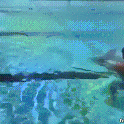

The Mindorobots Project

Engineering | Design | Impact Innovation | Research | Entrepreneurship
My quest is to leverage technology to solve problems and overcome challenges for humanity. I hope to bridge the gap between engineering research, art culture and entrepreneurship.
Over the past 4 years, I have built ocean trash collecting robot swarms in Indonesia, IOT-based farming systems in Burma, credit scoring AI software in Hong Kong, intelligent underwater cameras to photograph sharks in the Philippines, braille devices for the blind in Japan and online education portals in India, among others.
In the process, I have had the opportunity to speak at TED, set a Guinness world record, publish 3 research papers, pitch at Hult Prize, become a Mensa Member and build businesses that are backed by some of the most prestigious venture groups in Asia.
I’ve founded the Vayu Project, Open Ocean Camera, Open-Fintech and osrei.org.

Skills & Introduction:
OSREI or the Open Source Remote Education Initiative is a project that aims to solve educational disparity by providing high quality crowd sourced educational content through tablet computers and the cloud. OSREI is already in Vietnam, the Philippines and India!
Research Questions:
Detailed Description:
OIn certain remote regions across the world, children have poor access to good teachers, good advisers and good information. They receive little to no non-academic education such as digital literacy, visualization, career counselling etc. Meanwhile, schools in cities often have electronically aided education while simultaneously having excellent staff to help their students. Electronic aided education is least existent in places where it is most necessary, in areas where high quality educational resources are scarce. We use modern Android based tablets to facilitate Minimally Invasive Education (MIE) in these areas.
My Role
I founded OSREI with Tejasvi Mehra at The University of Hong Kong. I was in charge of organizing our expeditions, securing funding, building the website and building a script that allows us to upload and download educational content onto the android tablets via the dropbox platform. I am in charge of the Philippines and India chapters of the project. I established our partnership with the Yellow Boat of Hope Foundation and have worked with Jay Jaboneta and Anton Lim. Our work was featured in the HKU Annual Review as a key student project.
Why
I want to build technology that helps people develop solutions to their own problems so that we can in a decentralized way, make the world a better place. As a computer engineer, I believe Digital literacy is the key to empowerment - the internet is the ultimate learning tool and future of opportunity for someone who cannot afford/access a formal education. OSREI was the result of this belief.
I was inspired by Suguta Mitra's Hole in the Wall project and decided to upgrade it for this decade!

Open Fintech
Skills & Introduction:
At Open, our goal is to become the Transunion/Experian for SME credit scoring globally!
Detailed Description:
Across the SEA there’s millions of small businesses (SME’s) that are looking to borrow money. However, their accounting systems look like a calculator+notebook. And they usually have no idea what a balance sheet/pnl is, not computer literate. They cannot account themselves or afford anyone external. As a result they borrow from informal lending markets/loan sharks at ~60% per annum (loan-sharks even higher 120%). This often leads to suicide/financial ruin.
Meanwhile, lenders have to physically send a credit officer to literally sit and watch a businesses for 3-4 days to assess and make balance sheets. This has a lot of back and forth - data is not clear. Costs a bank 420 USD to acquire a SME.
At Open we provide SME's with a free tool to help track their inventory, customer credit and accounts. In turn, we are able to generate a credit score for them and refer them to banks/lenders as required.
We've been backed by Entrepreneur First since Nov 2019 (EFHK3).
My Role
I'm the co-founder and CTO of Open. I'm supported by my CEO, Xania Wong and an incredible team.
Why
My life's been about breaking access barriers using technology. Growing up in India, I have strong empathy towards SME's and the challenges they face in the informal market. At Open we build base level digitization in emerging markets across SEA. To me, that's just amazing.
Open Ocean Camera
Skills & Introduction:
The Open Ocean Camera is a product that delivers a 7x cost improvement and 50x time improvement in the long term underwater video monitoring of marine species by using deep-learning based image classifiers.
Detailed Description:
Currently, long term underwater video monitoring of marine animals is done using Go-Pro
cameras which run out of battery & memory every 3 days. Researchers organize a dive at cost of 50USD - 3Hrs time per camera to replace/replenish them every 3 days.
This operational cost make is very EXPENSIVE to do this task. Further, the current system records only 3 modes (video, photo 1 sec, photo 3 sec) - thus is INFLEXIBLE
and records through the night (waste footage). - WASTEFUL. Finally, as a final major pain-point, the 3 days of recorded video has to be watched on fast forward to
find the few seconds where the animals went by to ID for research. - MONOTONOUS & TIME CONSUMING.
Our solution is the Open Ocean Camera which:
Lasts 3 weeks underwater (vs 3 days) & 1024 Gb memory (vs 128 Gb)
Uses deep-learning based classification to auto-sort images (no post processing!)
App allows fully flexible timetabling and custom image modes (ISO, shutter speed etc)
We use advanced battery management and timetabling to extend battery life.
We've been awarded the Cyberport CCMF fund in 2019.
My Role
I'm the founder and CEO of Open Ocean Camera. My co-founder is National Geographic Explorer, Dr. Alessandro Ponzo of LAMAVE Institute, Philippines.
Why
I love AI. I love Computer Vision. I love the Oceans. I love NatGeo. I love making money :)
EmployMe
Skills & Introduction:
Everyday in India, hundreds of daily-wage laborers spend 3-4 hours of their working simply travelling to and waiting at labor chowks-to find work for the day. EmployMe uses an SMS to directly connect companies to laborers and allow laborers to wait less and earn more.
Detailed Description:
Across India, the informal sector forms about 68% of the labor force. A large part of this force is matched to companies by contractors who pick up workers
from fixed locations called labor chowks. Everyday these workers travel upto an hour to get to a labor chowk, wait upto two hours there and then another hour to get to
their workplace.
This market inefficiency means that those at the bottom of the pyrimid lose upto 30% of their income simply waiting for work.
With EmployMe, workers can wait less and earn more.
We use SMS (which works even on button phones) to help connect companies and workers directly. This boosts productivity and lowers costs for companies while allowing workers better wages.
EmployMe was a Hult Prize Accelerator Finalist at the Ashridge Castle in 2019, won the Ho Chi Minh Regionals and onboarded over 4000 workers over North India in 4 weeks.
My Role
I was the co-founder of EmployMe and a lot of the ground work in India because of my family background in manufacturing.
Why
My family runs a manufacturing unit in India and I've seen this severe market inefficiency plague the Indian informal sector for years. It's a great problem to solve, just needs the right motivation.
BoardClick
Skills & Introduction:
At Boardclick, we use the faces of passersby to change a restaurant's advertising display based on their age/gender profile.
Detailed Description:
We designed, build and piloted a digital chalkboard that takes images off the restaurnts instagram and then uses the faces of passersby to select the picture to show based on
their age/gender profile (see the app example in the third picture).
My Role
I was the co-founder of Boardclick. I eventually quit the project after 6 months because of a market slump in HK caused by the 2019 democracy protests. I also
built the whole system myself.
Why
I believe that AI will transform outdoor advertising as we know it. Outdoor is a sector that's operated largely the same over the last 100 years. Great time to disrupt!
Skills & Introduction:
The goal of this project is to empower coastal communities to affordably photograph, map and conserve their reefs. MindoroBot is a swarm-robot which can sail and create photogrammetric maps autonomously at a low cost with a laser quadrat.
Research Questions:
Detailed Description:
Coral reef ecosystems are some of the most diverse and valuable ecosystems on earth. A giant issue with coral conservation is that reef mapping is done by divers moving and photographing a PVC quadrat for every unit area of the reef. MindoroBot is a swarm-robot which can sail and photograph and map reefs autonomously at a low cost with a laser quadrat. We hacked an aerial mapping drone to be able to do this and ran our prototype in Mindoro island, the Philippines. The camera used was an off-the-shelf GoPro and a standard smartphone gimbal. The image stiching (and some photogrammetry) was done using the PIX4D suite for aerial drones. The project aimed at hacking existing technology to deliver a simple, usable reef mapping robot.
My Role
I founded Mindorobots with TED senior fellow Cesar Harada and Rohak Singhal. I organized the whole project from the University side - including funding, logistics, mentorship and recruitment. At Mindoro, I was in charge of hacking the GoPro and connecting it to the PIX4D Photogrammetry Mapping Software to create the maps. I assembled the gimbal fixture for camera stablization. Further, I built numerous laser quadrats to understand how the reef image can be converted to 3D from a 2D image. I worked on algorithms for pose estimation and robot navigation.
My work will be presented at RCUK 2018, London and EI 2019 in San Francisco! We won the runners up at the James Dyson Award and were broadcast on numerous news outlets for our work. See the project site or facebook for more!
I was mentored by Cesar Harada, Ken Chew, Eddie Yung, Prof. Edmund Lam and Prof. KS Lui and was supported by a team of 12 of the finest engineers at the University of Hong Kong.
Why
I want to build technology that helps people solve own problems so that we can in a decentralized way, make the world a better place. I believe automating tasks that human's are inefficient at and reducing the marginal cost of our infrastructure is the key to realizing the next industrial revolution. Inspired by Cesar Harada, I explored vision systems and was captivated by photogrammetry and stereo vison and it's incredibly impactful applications in the real world. Cesar inspired the Mindrobots team to think about how local communities can conserve their own reefs. Mindorobot's is an amalgamtion of these interests and inputs.

Skills & Introduction:
The goal of this project is to reinvent the way we explore our oceans.
The Vayu Project is a team effort by students and professors at the bionics and control lab at The University of Hong Kong to build the Guinness record-breaking fastest robotic fish.
Research Questions:
Detailed Description:
This project looks to engineering a robot that mimics the highly efficient natural motion of fish and delivers high performance and efficiency. The project aims to break a Guinness World Record shortly by making the Vayu robot the fastest robotic fish to have ever been built -we're trying to be faster than Phelps!
The robot is a complex piece of technology and pushes the limits of bio-mimicry and underwater engineering like never before.
Vayu in Sanskrit is a fast wind and Yu in Chinese means fish.
My Role
I founded the Vayu Project with Dr. Zheng Wang at the University of Hong Kong. I build all the electronics and code the radio control and vision systems that control the robot. I also help design a number of the 3D printed components of the body shell on Solidworks. Finally, as the founder of the project, I also lead the project direction and outreach.
My first research paper (and the first project paper!) were presented by me at PAAMES/AMEC 2018 in Busan about Vayu. I applied to the Guinness Book of World Records for "Fastest Robotic Fish" when I was in high school (2014) and got approval in 2016 to attempt after some correspondance. As a year 2 undergraduate I had few resources to start myself so I approached Professors at my University to see if we could do this together - thus VAYU was born. Do check out our facebook page!
Why
As a child I always wondered how fish glide so gracefully yet swiftly while motorboats were noisy and lumbering. Since then I've been fascinated by biology and its parallels to engineering. Soft robotics and biomimetics are areas where I wish to make huge impact with my work - I've been building humanoids, robot arms, prosthetics and soft-robots since I was 15. Vayu is my attempt to use biomimetics to reinvent the way we travel our oceans. In July '17 I completed a course on Soft Robotics under Prof. Hongbin Liu (KCL) at Peking University to better understand the dyanamics of a robot like Vayu.


Clearbot
Skills & Introduction:
At Clearbot we're building autonomous, self-navigating robot swarms that use AI vision to collect trash from the ocean.
Research Questions:
Detailed Description:
ClearBot is a system of AI vision enabled, Self-Navigating, Self-Charging, trash collection Robots that collaborate as a
swarm to collect ocean trash. Imagine this AI-vision powered robot army protecting our oceans for us autonomously.
Clearbot in a box, the newest iteration of the idea, allows non-technical users to simply buy the box+thurster system from us,
fit it onto an existing boat frame and convert it into a self-suffcient clearbot!
We implemented an advanced computer vision program to recognize floating plastic, which is also able to distinguish floating plastic from marine creatures.
We are still improving the accuracy of the AI, and we believe this technology will be of great help to the autonomous navigation of ClearBot in near future.
We tested our bot in Bali, with local communities and surfers and later in Hong Kong at Repulse Bay.
Clearbot represented China and won runner up at the Global Grand Challenges Summit in London in 2019.
My Role
I'm the founder of the Clearbot project, organized and lead the project through its inception to the present stage. I also worked on the electronics and mechanical components of the bot along with the team-members.
Why
Clearbot was started with the intention of making cutting edge engineering available to the most vulnerable and exposed communities, hence giving them the tools to create global impact with their local effort. Our journey from inception, the first expedition and finally to the stage of the Global Grand Challenges Summit stands testament to the power of this concept and how, with the right team and support, we stand a fighting chance against the global plastic crisis. Our goal is to push ahead until we can sustainably use this system to remove 90% of the trash from our oceans.
EMG Prosthesis
Skills & Introduction:
This was my final year research project and I designed a feedback loop model that read EMG signals of my muscles and replicated their position on a servo actuated prosthetic model.
Research Questions:
Detailed Description:
Through this project I researched the relationship between the EMG signal and the position of the arm at any point in time. I hypothesized that it is possible to keep track of
the position of the limb via the EMG signal using the area under the curve (integral) of a cleaning EMG signal. I then build a prosthetic model, recorded signal patterns with my bicep and wrist muscles.
After 6 stages of pre-processing (number of filters), getting the peak points of the signal, calculating the area of the curve, estimating the angles and fitting a new curve, I was able to build
a model that successfully replicated the real position within 87% accuracy with a signal lag of ~3 seconds.
See my detailed final report (complete with graphs and experimental data) here.
My Role
This project was my solo final year research project.
Why
Better, more affordable prosthesis are key to us rehabilitating amputees. This project is a step in the right direction.
Skills & Introduction:
The goal of this project is to reinvent the realtionship that the visually impaired have with technology. At NxtBraille we are developing open-source, freely distributed, integrated braille reader/keyboard for smartphones. Once our tactile interface is perfected - our goal will be to see if we can send minimalized images from the smartphone camera to the body through visual-tactile sensory substitution.
Research Questions:
Detailed Description:
Current refreshable braille displays cost upwards of 700USD. We're replacing the expensive piezo system with a new haptic interface to help cut the cost to under 20USD. Our idea is to make braille based smartphone access more convenient/accessible for visually impaired people and help support greater digital literacy in the community. Since the project is open source, anyone can freely add to the project, improve it or replicate it or sell it without any patenting royalties. This will significantly reduce the cost and increase the availability of these devices.
The team travelled to X.Factory, Seeed Studio in Shenzhen and met with Josh Grisdale from accessibility Japan, Emi Aizawa and Mark Bookman in Tokyo. Our final goal will be to restore vision completely using the vibrato-tactile interface and sensory substitution.
My Role
I founded the NextBraille with Rohak Singhal at the University of Hong Kong. I was entirely responsible for the ideation, design and implemention of the keyboard interface. I also came up the the "Vibraille" concept - a vibration based haptic interface that allows the person to communicate with their device through their skin using sensory substitution . A team of 8 of the finest engineers at HKU then helped implemented this idea into a reader.
Why
My desire is to build technology that will enable others to more fully fulfill their potential. I wish to reinvent the relationship that we have with our technology. I love experimenting with interfaces. I often ask myself "How can we communicate better with our technology". I love thinking about data-minimalization and how we can abstract data and feed it into the body using different techniques. Inspired by David Eagleman's Sixth Sense vest I've experimented with haptics, EMG's etc. My empathy towards the visually impaired community had grown while studying how our brains percieve depth and color for another project. I simply cannot fathom a life without color, depth and visual perception. NxtBraille was born of all these interests.


Skills & Introduction:
TThe goal of this project is to build technology that will allow others to fully filfill their potential. The aim is to build a prosthetic hand which allows amputees to non-invasively control and "feel" back from it (retain sensory input) just like a biological hand.
Research Questions:
Detailed Description:
The goal of this project is to build technology that will allow others to fully filfill their potential. Although numerous companies in the open source prosthetics space - none are using open hardware and off the shelf resources - making users depend on their hardware/software systems to be able to use the designs. We are trying to change that by building an open source hand which allows users to control and well as feel back using their prosthetic limbs. The goal is to deliver a product that anyone can download for free and 3D print and whose components can be bought off the shelf from any large online retailer like Amazon or Taobao. We are using open hardware platforms like the arduino to be able to make this possible. We aim to deliver a design that can be scaled easily for any size and would cost under 100 USD to build yourself.
My Role
This project is my Final Year Project under Edmund Lam at the University of Hong Kong. As a result of the University course structure, this project is solo!
Why
Part of my passion is a desire to build technology that will allow others to fully filfill their potential. I was inspired by Hugh Herr's TED talk an I've been workin on prosthetics since. I strongly believe in Stephen Hawkings idea of the human experiment being able to transcend their own capabilites. I'm also a strong proponent of the open source movement. However, I notice that open-prosthetics aren't really open source - they have proprietary electronics. During NxtBraille, I thought about how haptics could also be used to interface data with sighted people. How cool would it be if I could communicate with my phone (read texts, send messages etc) just by thinking? "How much data can we interface through our skin?". Handuino is a result of all these ideas.


Skills & Introduction:
I have, from a young age, driven by a powerful desire to break barriers. This project's goal was for me to break a national record before my 16th Birthday. I built the smallest bipedal robot in India.
Research Questions:
Detailed Description:
The robot robot is only 5 inches tall and perfectly capable of walking. It can also kick, move down slopes and dance! I learnt the basics of feedback and control loops through this project. More here!
My Role
This project was a solo work!
I was award the a national record by the Limca Book of Records in India. My work was featured on numerous Indian news channels and papers.
Why
My parents run a small manufacturing unit outside Bangalore, India and when I was 13, my dad engineered a CNC machine to mill certain component they were manufacturing. I was amazed. This was my first real exposure to practical "robotics" and around this time I also came across the Honda Asimo - pre-Atlas this was the fanciest humanoid robot in the world. I was learning C++ in school and had just bought myself an Arduino and a servo motor with my pocket money. That's when I decided I was going to build a small Asimo with what I had (I couldn't afford larger servo's anyway). That's how the biped came to existance!
Skills & Introduction:
This robotic arm is 6 inches tall and is complete with a multipurpose gripper. I built it when I was 17.
Research Questions:
Detailed Description:
This robotic arm is 6 inches tall and is complete with a multipurpose gripper. I built it when I was 17. The idea was to learn how a robotic arm works. I self-learnt a lot of theory about robot kinematics through this project. This would later become my second national record with the Limca Book of Records.
More here
My Role
This project was a solo work!
I was award the a national record by the Limca Book of Records in India. My work was featured on numerous Indian news channels and papers.
Why
My parents run a small manufacturing unit outside Bangalore, India. Their office is on the first floor and you can see the shop floor below. As long as I've visited their plant (and even today) I'm always irked by the task of the operator of the 500 ton press. It's the monotony of the task of the operator that gets to me. Put a part in, press a button, take it out, and repeat (for 8 hours a day, for 6 days a week). Ever since I started tinkering with servos and my arduino I felt my goal should be to automate the factory (specifically the 500 ton press) using what I knew. My dad told me a FANUC arm costs ~18000USD and my arduino's & servo's cost 60USD. Hence, the quest to build a robotic arm. Although I didn't automate the factory - I self-taught and learnt a lot about robot kinematics. Later this would drive me to study Soft Robots at Peking University and I now look forward to bringing "5 Minute Automation" into the world!

Fire iVacuation System
Skills & Introduction:
A smart IOT based fire evacuation system that monitors the fire data to display an ideal escapte route in realtime.
Research Questions:
Detailed Description:
A huge number of lives are lost every year to fire. Studies show that a major cause of death during fire is inability to escape due to route blockage. I built a smart IOT based fire evacuation system that monitors the fire temperature, CO2 levels etc and displays an escapte route in realtime to help unfamiliar evacuees escape safely. Further, it maps the fire for the fire department in realtime so that they can optimize their attack strategy.
My Role
This project was a solo work!
Why
My quest is to leverage technology to solve problems and overcome challenges for humanity. Fires take countless lives each year. I decided I was going to try and make a difference!
3D Box Scanner
Skills & Introduction:
A Kinect based 3D box scanner - just rotate your box in front of the camera to generate the 3D model!
Research Questions:
Detailed Description:
I love the concept of hacking existing platforms (smartphone cameras/sensors etc) to create new technology solutions. It appeals to the jugaadu Indian in me and I feel it's the most powerful way of empowering people to access new technology.
This project uses the popular Xbox Kinect to 3D scan boxes! Just show all the sides of the box (roll it around) to the camera and the code will return a 3D point cloud of the scanned box!
My Role
This project was a solo work! Code is up on github.
This project was submitted as my coursework project for the MSc Advanced Vision course at the University of Edinburgh supervised by Prof. Robert Fisher.
Why
I'm amazed by how our eyes help us percieve distace through stereo vision. I also love my Xbox and its Kinect system. I decided to hack the two together to make a "3D scanner" that can scan boxes for an Advanced Vision course assignment at the University of Edinburgh!
CodeXpress Myanmar
We built 6 self-sustaining open source IOT devices to monitor agricultural data in Myanmar. Myanmar is leapfrogging many technologies due it's entirely new infrastructure. We built these devices at HKU and with the support of Dagon University in Yangon, deployed these devices in the field to test them. Later our work was presented at Myanmar's largest startup ecosystem hub, Phandeeyar.
My Role
I was the head of hardware development on this team. Check out the hardware github for more.
Why
I love how new technologies disrupt industry and to me Myanmar is a fascinating country. They have the cheapest 4G in the world. Everyone (even the lowest income tier) owns a smartphone. Most of the country uses cash or mobile payments - most do not have bank accounts. No email ID's - only facebook. It's an environment like no other and the opportunity to be part of the new technology in this country was one I could not refuse!

OSREI

The Vayu Project
NextBraille

Handuino

Robotic Arm
Fire iVacuation

Smart Home (IDP)

GPU Mapping Realtime

Shirt Folder

PCB Manufacture: NE555 Organ

Fish Feeder
MTR Madness!

Sentry Gun

Logo/UX Design

Trapped Documentary (2017)

Model United Nations

Music Composition

Portfolio
"I'm driven by an ambition to empower people to break barriers and transcend their limitations so that they can realize their full potential."
My quest is to leverage technology to solve problems and overcome challenges for humanity. I hope to bridge the gap between engineering research, art culture and entrepreneurship.
Over the past 4 years, I have built ocean trash collecting robot swarms in Indonesia, IOT-based farming systems in Burma, credit scoring AI software in Hong Kong, intelligent underwater cameras to photograph sharks in the Philippines, braille devices for the blind in Japan and online education portals in India, among others.
In the process, I have had the opportunity to speak at TED, publish 3 research papers, meet Bill Clinton as Hult Prize Finalist, break a Guinness world record (world’s fastest robotic fish), become a Mensa member and build businesses that are backed by some of the most prestigious venture groups in Asia.
I’ve founded the Vayu Project, Open Ocean Camera, Open-Fintech and osrei.org.
My companies have been backed by Entrepreneur First, Hult Prize, Hong Kong X (Sequoia Capital) and Cyberport.
I broke a national record at the age of 16 for building India’s smallest Bipedal Robot.
I have presented research papers at PAAMES/AMEC 2018, RCUK 2018 and at EI 2019 IRIACV.
I've won awards at the James Dyson Award, Hult Prize, 81' Inclusion Fund, Gallant Ho Experiential Learning Fund, Government of India Top 1% Award, SY King Prize for Academic Excellence, HKSAR Government Reaching Out Award, Arthur and Louise May award among others.
I’ve spoken at TEDxCityUHongKong, the EARS@UoE and at the Own Future Fair and studied at the University of Edinburgh, Peking University and Utrecht University through exchange programs.
I use and create technology to disruptively solve problems via a transdisciplinary, design thinking approach.
I believe creativity is driven by diversifying experiences. I’ve worked on Marxist Alienation, Coral Reef Bleaching, Flipped-Education and Neuroscience, Business Consulting (via Eureka Consulting Group, HKU), am a Trinity College of London certified Grade 7 Pianist and have traveled to 25 countries, even North Korea in a quest to understand cultures and represent my own.

Influencer. Maker. Nomad. Blithering Idiot.
Sid likes to ask, "When do people stop having fun in life?"
When Sid isn't working he's working on ticking off items on his osumposum bucketlist.
Sid has a multi-layered vision-why-quest definition. Check out the dynamic doc here.
Sid tries to improve by 1% everyday by learning and applying ideas. He maps his knowledge and learning here.
Updated scans of his ideas book will be put up here soon!
A timeline of Sid's life can be found by stalking his facebook page.
Near Future: Currently I'm working on writing a book about robotics for kids
Here's a small map of where Sid has lived and travelled!
Media
TEDxCityUHongKong 2017 | How To Be A Time Lord
TV: Smallest Biped India '13

TV: Model United Nations '14

TV: Smallest RobotArm '15

TV: Mindorobots Philippines '18

Chronologically Arranged Newspaper Articles
Smallest Bipedal Robot India (2013)

Smallest Robotic Arm India (2015)

Harvard Model United Nations (2014)

Indian Board Topper (2015)

IoT Hackathon by ITC (2015)

Mindorobots (2018)
Clearbot MingPao (2019)
Clearbot SingTao(2019)

EmployMe Vietnam (2019)
Sidhant Gupta
304, 5th Main, 1st Block,
Koramangala, Bangalore - 560034,
Karnataka, India.
(+91) 9902801600
(+852) 51385925
Reach me at sdhnt@connect.hku.hk